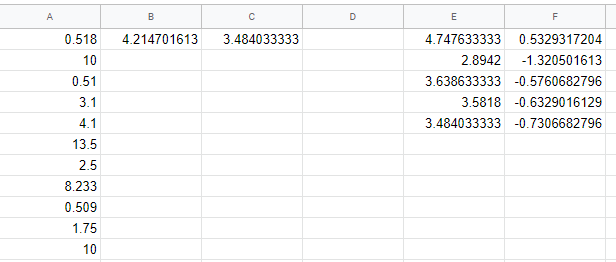
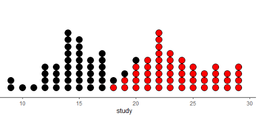
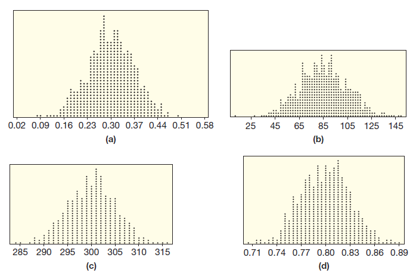
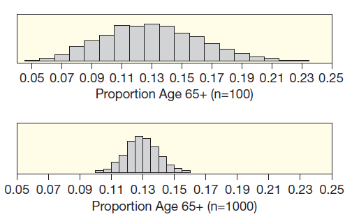

3.1 표집 분포

1장에서 관심 있는 모집단에서 표본을 얻는 방법을 배웠다. 이 장에서 표본의 정보를 활용하여 모집단의 특성을 이해하는 통계적 추론(statistical inference)을 배울 것이다.
모수와 표본 통계량
통계적 추론에서는 모집단인지 아니면 표본인지를 명확하게 구분하는 것이 매우 중요하다. 모집단에서 측정한 값은 모수(母數, population parameter ), 표본에서 측정한 값은 표본 통계량(sample statistic) 또는 간단히 통계량이라고 부른다.
2장에서 모집단이나 표본에서 평균과 비율 등의 이름은 같지만 기호는 다르다고 강조하였다. 다음 표는 앞 장에서 배웠던 모수와 표본 통계량의 기호를 요약한 것이다.
| 이름 | 모수 | 표본 통계량 |
|---|---|---|
| 평균 | \(\mu\) | \(\bar{x}\) |
| 표준편차 | \(\sigma\) | \(s\) |
| 비율 | \(p\) | \(\hat{p}\) |
| 상관관계 | \(\rho\) | \(r\) |
| 기울기 | \(\beta\) | \(b\) |
예제 3.1. 미국 센서스 조사 결과 \(25\)세 이상의 성인 중에서 학사 이상의 학위를 가진 사람은 \(27.5\%\)이다. 표본 크기 \(n=200\)인 무작위 표본을 뽑았더니 \(58\)명이 학사 이상의 학위를 가지고 있었다. 모수와 표본 통계량은 무엇인가? 올바른 기호를 사용하여 답하라.
풀이 (클릭하면 풀이가 보입니다)
모수는 \(25\)세 이상의 모든 미국인 중에서 학사 이상의 학위를 가진 비율이므로 \(p = 0.275\)이다. 표본 통계량은 표본에서 \(25\)세 이상의 모든 미국인 중에서 학사 이상의 학위를 가진 비율이므로 \(\hat{p} = 58/200 = 0.29\)이다.
모수의 추정치로서 표본 통계량
\(2011\)년 \(4\)월 \(29\)일 영국의 윌리엄 왕자 결혼식을 미국의 성인 중에서 \(34\%\)가 시청했다고 한 여론조사 업체가 발표했다. 미국의 모든 성인 중에서 \(34\%\)가 시청했다는 것을 어떻게 알았을까? 정확하게 알기 위하여 모든 성인에게 결혼식을 보았는지 물어보았을까? 실제로 이렇게 조사했을 거라 생각하는가?
무작위 표본을 사용한다면 표본 통계량으로 모수를 상당히 정확하게 추정할 수 있다. 이 여론조사 업체가 발표한 결혼식 시청의 추정치 \(34\%\)는 단지 \(1006\)명의 무작위 표본에 기초하였다. 일반적으로 모수를 정확하게 알려면 모집단 전체의 데이터를 수집하고 모수를 계산해야 한다. 하지만 대부분의 경우에 이것은 가능하지 않다. 대신에 모집단에서 표본을 뽑아 통계량을 계산하여 모수를 추정할 수 있다.
확인문제 1. 모수와 표본 통계량의 차이점에 대한 설명으로 올바른 것은? (선택지를 눌러 채점)
1 모수는 표본에서 측정한 값이며, 표본 통계량은 모집단에서 측정한 값이다.
2 모수는 모집단에서 측정한 값이며, 표본 통계량은 표본에서 측정한 값이다.
3 모수와 표본 통계량은 동일한 값을 의미한다.
4 표본 통계량은 모집단에서 측정된 값을 추정하는 데 사용된다.
확인문제 2. 다음 중 모수와 표본 통계량에 대해 맞는 설명은? (선택지를 눌러 채점)
1 모수는 모집단의 특성을 나타내며, 표본 통계량은 그 모수를 추정하는 데 사용된다.
2 표본 통계량은 모집단에서 계산된 값이며, 모수는 표본에서 계산된 값이다.
3 표본 통계량은 모집단의 특성을 반영하지 않는다.
4 모수는 항상 정확한 값을 제공하며, 표본 통계량은 부정확하다.
확인문제 3. 다음 중 “모수의 추정치로서 표본 통계량”에 대한 올바른 설명은? (선택지를 눌러 채점)
1 표본 통계량은 모집단의 모든 데이터를 수집하여 계산된 값이다.
2 표본 통계량은 모집단의 특성을 정확하게 반영할 수 있다.
3 표본 통계량은 일반적으로 모수를 정확하게 추정하는 데 사용된다.
4 표본 통계량은 모집단의 특성을 알기 위해 표본이 필요 없을 때 사용된다.
표본만 하나 있고 모수를 모를 때, 모수의 가장 좋은 추정치(best estimate)는 표본 통계량이다.
예제 3.2. 자동차의 연비는 환경청에서 자동차의 표본을 뽑아 검사한 후에 결정된다. \(2012\)년 현대 자동차의 A 모델 중에서 \(n=12\)인 표본을 뽑아 평균 연비를 조사하였더니 \(1\)리터당 \(20\).5km이다. 모집단과 모수를 기술하라. 표본 정보를 가지고 모수를 가장 좋게 추정하라.
풀이 (클릭하면 풀이가 보입니다)
\(2012\)년에 생산된 A 모델의 모든 현대 자동차가 모집단이다. 모수 \(\mu\)는 \(2012\)년 A 모델의 모든 현대 자동차의 평균 연비이다. 표본에서 \(\bar{x}\)는 \(20.5\)이다. 모수 \(\mu\)에 대한 가장 좋은 추정치는 표본 평균인 \(20.5\)이다. \(\mu\)의 정확한 값을 알려면 \(2012\)년에 생산된 A 모델의 모든 현대 자동차의 연비를 조사해야 한다.
예제 3.3. 다음 각각의 질문에서 관심 있는 모수와 이 모수를 추정할 표본 통계량을 기술하라.
(1) B 도시 근로자의 평균 통근 시간은 무엇인가?
(2) 레스토랑에서 계산서 금액과 팁의 상관관계는 무엇인가?
(3) 유선 전화 없이 휴대폰만 가진 \(30\)대와 \(50\)대의 비율 차이는 무엇일까?
풀이 (클릭하면 풀이가 보입니다)
(1) 적절한 모수는 \(\mu\)인데 B 도시에 사는 모든 근로자의 평균 통근 시간이다. B 도시에 사는 근로자 중에서 무작위로 뽑은 표본에 기초한 \(\bar{x}\)로 \(\mu\)를 추정한다.
(2) 적절한 모수는 \(\rho\)이고 레스토랑의 모든 고객이 계산한 금액과 지불한 팁 액수 사이의 상관관계이다. 계산서의 무작위 표본을 뽑아 \(r\)을 계산하여 모수 \(\rho\)를 추정한다.
(3) 적절한 모수는 \(p_1 - p_2\)이다. \(p_1\)은 \(30\)대 중에서 휴대폰만 사용하는 사람의 비율이고 \(p_2\)는 \(50\)대 중에서 휴대폰만 사용하는 사람의 비율이다. 각 나이 그룹에서 무작위 표본을 뽑아 계산한 표본 비율의 차이 \(\hat{p}_1 - \hat{p}_2\)로 모수 \(p_1 - p_2\)를 추정한다.
확인문제 1. 다음 중 모수를 추정하기 위해 사용되는 가장 좋은 추정치는 무엇인가? (선택지를 눌러 채점)
1 표본 통계량
2 모집단 통계량
3 표본 평균
4 모집단 평균
확인문제 2. 다음 설명에서 모수와 표본 통계량에 대해 맞는 설명은? (선택지를 눌러 채점)
1 표본 통계량은 표본에서 계산된 값이며, 모수는 모집단에서 계산된 값이다.
2 모수와 표본 통계량은 항상 동일하다.
3 모수는 표본에서 추정된 값이며, 표본 통계량은 모집단에서 측정된 값이다.
4 표본 통계량은 모집단에서 구할 수 없는 값을 추정하는 데 사용된다.
확인문제 3. 다음 중 적절한 모수와 그에 대한 표본 통계량을 기술한 것은?
(1) B 도시 근로자의 평균 통근 시간은 무엇인가?
(2) 레스토랑에서 계산서 금액과 팁의 상관관계는 무엇인가?
(3) 유선 전화 없이 휴대폰만 가진 \(30\)대와 \(50\)대의 비율 차이는 무엇일까? (선택지를 눌러 채점)
1 (1) \(\mu\), \(\bar{x}\)
2 (2) \(\rho\), \(r\)
3 (3) \(p_1 - p_2\), \(\hat{p}_1 - \hat{p}_2\)
4 모든 항목에 대해 위와 같이 해당된다.
표본 통계량의 변동(variability)
모수는 고정된 값이지만 통계량은 모집단의 어떤 케이스가 표본으로 뽑히느냐에 따라 값이 다르다. 모수의 값을 알고 싶지만 직접 계산할 수는 없다. 모집단의 모든 데이터를 수집하는 것은 현실에서 매우 어렵거나 불가능하기 때문이다. 통계량 값은 표본에 따라 달라지지만 그것이 어느 정도인지 계산할 수 있다.
예제 3.3에서 표본 통계량으로 모수를 추정하는 몇 가지 사례를 제시하였다. 이 추정치들은 얼마나 정확할까? 이것은 통계적 추론에서 가장 기본적인 질문 중의 하나이다. 모수는 고정된 값이지만 모르고, 통계량은 값을 알지만 표본에 따라 변하는 값이다. 이 문제를 해결하려면 통계량의 값이 표본에 따라 얼마나 변하는지를 이해해야 한다.
예제 3.2에서 다룬 자동차의 평균 연비를 생각하자. 표본에서 구한 평균 \(\bar{x}\)는 \(20.5\)이다. 무작위 표본을 다시 뽑아 평균을 계산하니 \(20.4\)가 나왔다고 하자. \(20.4\)는 \(20.5\)와 매우 가까우므로 표본의 변동이 작아서 처음의 추정치 \(20.5\)가 상당히 정확한 값임을 의미한다. 하지만 새로운 추정치가 \(24.1\)이라면 \(20.5\)와 상당히 떨어진 값이므로 표본의 변동이 커서 처음의 추정치 \(20.5\)에 대한 불확실성이 높아진다.
물론 표본 평균 두 개만 비교해서 변동을 정확하게 평가할 수는 없다. 표본 평균의 변동을 좀 더 정확하게 추정하려면 훨씬 더 많은 표본이 필요하다. 이것을 이해하는 가장 좋은 방법은 아래 예제와 같이 알고 있는 모집단에서 표본을 뽑는 컴퓨터 모의실험(computer simulation)을 하는 것이다.
예제 3.4. \(2015\)년 미국 프로 야구 메이저 리그에 소속된 모든 야구 선수 \(868\)명의 연봉(단위: 백만 달러) 자료는 BaseballSalaries2015에서 얻을 수 있다. 모든 야구 선수의 평균 연봉은 얼마인가? 올바른 기호를 사용하여 답하라.
풀이 (클릭하면 풀이가 보입니다)
\(2015\)년 모든 야구 선수의 평균 연봉을 구글의 스프레드시트로 계산하면 \(4.215\)이다. \(2015\)년 모든 야구 선수를 포함한 모집단이므로 \(\mu = 4.215\)이다.
메이저 리그 야구 선수 중에 한국인은 몇 명 있는가?
예제 3.5. \(30\)명의 무작위 표본을 여러 번 뽑아 평균을 계산하여 모평균과 비교하는 작업을 구글의 스프레드시트 앱에서 해보시오.
풀이 (클릭하면 풀이가 보입니다)
- 데이터를 시트에서 읽는다.
- 새로운 시트를 하나 만든다.
Salary열의B2:B869데이터를 새로운 시트의A열에 복사한다.- 셀
B1에=average(A1:A868)을 입력하여 모집단의 평균을 계산한다. - 셀
A1위의 열 이름A의 삼각형을 클릭하면 나오는 메뉴 중에서 ’범위 임의로 섞기’를 클릭하여 모든 데이터를 무작위로 섞는다. - 셀
C1에=average(A1:A30)을 입력하여 \(30\)개의 표본 평균을 구한다. - 셀
C1의 값을 복사하여 셀E1에 값만 붙여 넣는다. 단축키는 “Ctrl+Shift+V”이다. - \(5\)-\(7\)번의 작업을 셀
C2:C5까지 반복한다. - 셀
F1에=E1-$B$1을 입력하여 모평균과의 차이를 구한다. - 셀
F1을F5까지 마우스로 끌어 당긴다. 위 모의실험을 \(1{,}000\)번 반복하여 표본 평균의 히스토그램을 그린다면 어떤 모양일까?

예제 3.5에서 표본 통계량이 항상 정확히 일치하지 않는 이유는 표본을 다시 추출할 때마다 데이터가 달라지므로 당연하다. 하지만 우리는 표본 통계량이 모수와 가까운 값이기를 기대한다.
위 그림은 모의실험을 \(5\)번 반복한 결과이다. 첫 번째 표본 평균은 \(4.748\)인데 모평균 \(4.215\)와 상당히 가까운 값이다. 두 번째 표본 평균은 \(2.894\)인데 모평균보다 \(1.321\) 작은 값이다. 다섯 번째 표본 평균은 \(3.484\)이다.
모집단 크기가 \(868\)일 때 표본 크기가 \(30\)인 무작위 표본의 경우의 수는 \(3.25 \times 10^{55}\)이다. 지구 상의 어떤 컴퓨터라도 할 수 없는 엄청난 작업이다. 모의실험을 반복하여 표본 평균과 모평균을 비교하는 다른 방법이 있을까?
확인문제 1. 다음 중 모수와 표본 통계량의 차이를 잘 설명한 것은 무엇인가? (선택지를 눌러 채점)
1 모수는 표본에서 측정된 값이며, 표본 통계량은 모집단에서 측정된 값이다.
2 모수는 모집단에서 계산된 값이고, 표본 통계량은 표본에서 계산된 값이다.
3 표본 통계량은 모수의 정확한 추정치이다.
4 모수는 표본을 통해 정확하게 알 수 있다.
확인문제 2. \(2015\)년 미국 프로 야구 메이저 리그에 소속된 모든 야구 선수의 평균 연봉을 구했을 때, 모집단 평균 연봉은 얼마인가? (선택지를 눌러 채점)
1 \(4.215\)
2 \(4.748\)
3 \(3.484\)
4 \(2.894\)
확인문제 3. \(30\)개의 무작위 표본 평균을 구하고 이를 모평균과 비교할 때, 표본에서 구한 평균이 모평균과 다를 수 있는 이유는 무엇인가? (선택지를 눌러 채점)
1 표본 크기가 충분히 크면 표본 평균은 모평균과 정확히 일치한다.
2 표본을 뽑을 때마다 데이터가 달라져서 표본 평균이 다를 수 있다.
3 표본 평균은 항상 모평균보다 클 수밖에 없다.
4 모평균을 알 수 없기 때문에 표본 평균은 항상 정확하다.
표본 평균의 표집분포
동일한 모집단에서 같은 크기의 표본을 여러 번 뽑아 만든 표본 통계량의 분포를 표집분포(sampling distribution)라고 한다. 표집분포는 표본이 달라지면 표본 통계량이 얼마나 변하는지 보여준다.
- 모집단의 텍스트 상자에 야구 선수 \(868\)명의 연봉 데이터를 복사하여 붙여 넣는다.
- ‘모집단 히스토그램’ 버튼을 클릭한다. 히스토그램은 오른쪽으로 꼬리가 긴 분포이다. 히스토그램 제목에 모집단의 평균과 표준편차가 있고 그래프에서 파란색 세모가 모집단 평균이다.
- 표본 추출 ‘1회’ 버튼을 클릭하면 텍스트 상자에 무작위로 뽑힌 표본 데이터 \(30\)개가 나타난다.
- 왼쪽 수직축은 모집단 히스토그램의 각 계급의 빈도이고 오른쪽은 표본 히스토그램의 계급 빈도이다. 두 분포가 겹쳐 있어 쉽게 비교할 수 있다. 표본 평균은 빨간색 세모이다.
- 표본 추출을 \(1{,}000\)번 정도 반복하면 표본 평균의 히스토그램은 대략 대칭이며 종 모양과 비슷하다.
확인문제 1. 표본 평균의 표집분포에 대한 설명으로 옳은 것은 무엇인가? (선택지를 눌러 채점)
1 표본 평균의 표집분포는 표본 크기가 달라지면 변화한다.
2 표본 평균의 표집분포는 표본 크기가 일정하면 변화하지 않는다.
3 표본 평균의 표집분포는 표본이 달라지면 표본 통계량이 변하지 않는다.
4 표본 평균의 표집분포는 표본 추출 횟수가 많을수록 변화하지 않는다.
확인문제 2. 모집단 히스토그램의 특징으로 옳은 것은 무엇인가? (선택지를 눌러 채점)
1 모집단 히스토그램은 왼쪽으로 꼬리가 긴 분포이다.
2 모집단 히스토그램은 오른쪽으로 꼬리가 긴 분포이다.
3 모집단 히스토그램은 대칭적이고 정규 분포를 따른다.
4 모집단 히스토그램은 정규 분포와 관계없이 왼쪽으로 치우친 분포이다.
확인문제 3. 표본 추출 \(1\)회 후, 표본 평균이 빨간색 세모로 나타나는 이유는 무엇인가? (선택지를 눌러 채점)
1 표본 평균은 모집단의 평균과 일치하기 때문이다.
2 표본 평균은 표본 히스토그램의 가장 작은 값이기 때문이다.
3 표본 평균은 무작위로 추출된 표본 데이터의 평균이기 때문이다.
4 표본 평균은 모집단 히스토그램에서 가장 큰 빈도를 나타내기 때문이다.
확인문제 4. 표본 추출을 \(1{,}000\)번 반복한 후 표본 평균의 히스토그램이 대칭적이고 종 모양에 가까운 이유는 무엇인가? (선택지를 눌러 채점)
1 표본이 무작위로 추출되어 다양한 값을 가진다.
2 표본의 수가 적어 표본 평균이 대칭을 이룬다.
3 많은 표본을 추출하여 중심극한정리(Central Limit Theorem)가 적용되기 때문이다.
4 표본 추출 횟수가 적어서 히스토그램이 대칭적으로 나타난다.
확인문제 5. 모집단에서 표본을 추출할 때 중요한 특징으로 옳은 것은 무엇인가? (선택지를 눌러 채점)
1 표본 크기가 작을수록 표본 평균의 표집분포는 더 넓어진다.
2 표본 크기가 클수록 표본 평균의 표집분포는 더 넓어진다.
3 표본 크기가 작을수록 표본 평균의 표집분포는 더 좁아진다.
4 표본 크기가 커지면 표본 평균의 표집분포가 대칭적이지 않게 된다.
표본 비율의 표집분포
예제 3.6. 예제 3.1에서 \(25\)세 이상의 미국 성인 중에서 학사 학위 이상을 가진 사람의 비율은 \(27.5\%\)라고 하였다. 아래 앱을 사용하여 표본 크기 \(n=200\)의 표본 비율 분포의 모양, 중심, 변동을 기술하라.
풀이 (클릭하면 풀이가 보입니다)
- 모집단의 비율 상자에 \(p=0.275\)를 입력한다.
- 표본 크기는 \(200\)을 선택한다.
- 표본 추출 ‘1회’ 버튼을 클릭한다. 뽑힌 사람이 학사 학위 이상이면 \(1\), 아니면 \(0\)이다. 표본 비율을 계산하여 히스토그램에 표시한다.
- 모의실험을 \(1{,}000\)번 정도 반복한다.
- 표본 비율의 표집분포의 중심은 대략 모비율인 \(0.275\)이고 범위는 대략 \(0.17\)에서 \(0.38\)이다. 분포의 모양은 거의 대칭이고 종 모양이다.
표본 비율과 표본 평균의 분포 모양은 거의 유사한데, 대략 좌우 대칭이고 종 모양이다. 이는 통계 이론으로 예측 가능한 매우 보편적인 성질이다. 표본을 무작위로 추출하고 표본 크기가 충분히 클 때, 표본 통계량의 분포는 대칭이고 종 모양이며 중심은 모수의 값이다. 표본 크기가 얼마나 커야 충분히 크다고 할 수 있는지는 뒤에서 다시 다룰 것이다.
확인문제 1. 표본 비율의 표집분포에서 주어진 표본 크기 \(n=200\)과 모집단 비율 \(p=0.275\)에 대한 결과로 옳은 것은 무엇인가? (선택지를 눌러 채점)
1 표본 비율의 중심은 \(0.17\)에서 \(0.38\) 사이의 값으로 분포된다.
2 표본 비율의 표집분포의 중심은 모집단 비율인 \(0.275\)이다.
3 표본 비율의 표집분포는 오른쪽으로 치우친 분포를 보인다.
4 표본 비율의 표집분포는 불균형적인 형태를 보인다.
확인문제 2. 표본 비율의 표집분포에서 \(1{,}000\)번의 모의 실험 후 얻은 결과로 옳은 것은 무엇인가? (선택지를 눌러 채점)
1 표본 비율의 표집분포는 대칭적이지 않다.
2 표본 비율의 표집분포는 모양이 대칭적이고 종 모양이다.
3 표본 비율의 표집분포의 범위는 \(0.25\)에서 \(0.35\)이다.
4 표본 비율의 표집분포의 범위는 \(0.18\)에서 \(0.40\)이다.
확인문제 3. 표본 비율의 표집분포의 중심은 대체로 무엇과 일치하는가? (선택지를 눌러 채점)
1 표본 평균
2 모집단 평균
3 모집단 비율
4 표본 크기
확인문제 4. 표본 비율의 표집분포에서 표본 크기가 충분히 크면 어떤 특징을 보이는가? (선택지를 눌러 채점)
1 표본 평균이 분포의 중심에서 크게 벗어나게 된다.
2 표본 통계량의 분포는 대칭적이지 않고 왜곡된다.
3 표본 통계량의 분포는 대칭적이고 종 모양이 된다.
4 표본 통계량의 분포는 점근적이지 않게 된다.
확인문제 5. 표본 비율의 표집분포에서 \(95\%\) 신뢰구간을 계산하려면 어떤 기준을 사용할 수 있는가? (선택지를 눌러 채점)
1 표본 평균이 신뢰구간의 중심으로 사용된다.
2 표본 크기가 \(30\) 이상일 때 신뢰구간을 계산할 수 있다.
3 표본 비율의 표집분포에서 \(2.5\%\)의 양쪽 꼬리를 제외한 구간이 신뢰구간이다.
4 표본 비율의 표집분포에서 신뢰구간을 계산할 수 없다.
표집 변동 측정: 표준오차
다른 무엇보다 중요한 것은 표집분포의 변동(variability)이다. 표본에 따라 통계량이 얼마나 달라지는지를 알면 모수의 추정치가 얼마나 정확한지 알 수 있기 때문이다.
통계량의 변동은 표집분포의 표준편차로 측정한다. 통계량의 표준편차는 대단히 중요하기 때문에 자신만의 특별한 이름인 “표준오차”(standard error)로 부르고 간단히 \(SE\)로 표기한다. 이름이 다르면 표본 내에서 값들의 변동과 통계량의 변동을 혼동하지 않기 때문이다. 표준오차는 통계량이 모수와 떨어진 평균적인 거리로 생각하면 된다.
예제 3.7. 앞에서 사용했던 앱으로 다음 표집분포의 표준오차를 추정하라.
(1) 표본 크기가 \(30\)인 표본에서 야구 선수의 평균 연봉 (BaseballSalaries2015)
(2) 표본 크기가 \(200\)인 표본에서 학사 학위 이상 소지자의 비율
풀이 (클릭하면 풀이가 보입니다)
표집분포의 표준오차는 모의실험으로 얻은 표본 통계량의 표준편차이다.
(1) 표본 평균의 표집분포 앱에서 표본 크기가 \(30\)일 때 \(1{,}000\)번 반복 실험하면 표준오차는 대략 \(0.99\)가 나온다.
(2) 표본 비율의 표집분포 앱에서 표본 크기가 \(200\)일 때 \(1{,}000\)번 반복 실험하면 표준오차는 대략 \(0.03\)이 나온다.
무작위로 뽑은 표본에 기초하여 표준편차를 계산하므로 모의실험을 할 때마다 값이 다를 수 있다.
2.3절에서 분포가 비교적 대칭이고 종 모양일 때는 대략 \(95\%\)의 데이터가 평균에서 \(2\)배의 표준편차 범위 내에 있다는 \(95\%\) 법칙을 배웠다. 이 법칙을 표집분포에 적용하면 약 \(95\%\)의 표본 통계량은 평균에서 \(2\)배의 표준오차 범위 내에 있게 된다. 따라서 표집분포의 히스토그램에서 통계량의 대략 \(95\%\) 범위를 찾아내서 \(4\)로 나누면 근사적인 표준오차를 얻을 수 있다.
예제 3.8. \(95\%\) 법칙을 사용하여 다음 표집분포의 표준오차를 추정하라.
(1) 표본 크기가 \(30\)인 표본에서 야구 선수의 평균 연봉
(2) 표본 크기가 \(200\)인 표본에서 학사 학위 이상 소지자의 비율
풀이 (클릭하면 풀이가 보입니다)
(1) 표본 평균의 표집분포 앱에서 중앙의 \(95\%\) 표본 평균의 범위는 대략 \(2.5\)에서 \(6.5\)이다. 표준오차의 추정치는 (\(6.5\) - \(2.5\))/\(4\) = \(1.0\)이다.
(2) 표본 비율의 표집분포 앱에서 중앙의 \(95\%\) 표본 평균의 범위는 대략 \(0.21\)에서 \(0.34\)이다. 표준오차의 추정치는 (\(0.34\) - \(0.21\))/\(4\) = \(0.0325\)이다.
확인문제 1. 다음 중 표준오차(standard error)의 정의로 올바른 것은 무엇인가? (선택지를 눌러 채점)
1 표준오차는 표본 내 값들의 변동을 측정하는 값이다.
2 표준오차는 모집단의 통계량의 변동을 측정하는 값이다.
3 표준오차는 표본에서 구한 통계량의 표준편차로, 통계량이 모수와 얼마나 떨어져 있는지를 나타낸다.
4 표준오차는 모수에서 통계량을 빼서 구한다.
확인문제 2. 표본 크기가 \(30\)인 표본에서 표본 평균의 표집분포의 표준오차를 추정했을 때 대략 얼마가 되었는가? (선택지를 눌러 채점)
1 \(0.03\)
2 \(0.32\)
3 \(0.99\)
4 \(1.5\)
확인문제 3. \(95\%\) 법칙을 사용하여 표본 비율의 표집분포에서 표준오차를 추정할 때, 중앙 \(95\%\) 범위가 \(0.21\)에서 \(0.34\) 사이에 있을 경우 표준오차는 대략 얼마인가? (선택지를 눌러 채점)
1 \(0.01\)
2 \(0.0325\)
3 \(0.05\)
4 \(0.1\)
표본 크기의 중요성
예제 3.9. 예제 3.1에서 미국 대학 졸업자 비율은 \(p=0.275\)라고 하였다. 표본 크기 \(n=200\)일 때 표본 비율의 표집 분포의 모양과 표준오차를 모의실험으로 알아보았다. 표본 크기가 커지면서 표집 분포는 어떻게 달라질까? 아래 앱에서 표본 크기 \(n\)이 \(50\), \(200\), \(1000\)일 때 \(1{,}000\)번 반복 실험한다. 표본 크기는 표집분포의 중심과 표준오차에 어떠한 영향을 끼치는지 기술하라.
풀이 (클릭하면 풀이가 보입니다)
표본 크기가 \(50\), \(200\), \(1000\)인 경우 모두 표집분포의 중심은 모비율 \(0.275\)와 매우 가깝지만 변동은 매우 다르다. 표본 크기가 증가하면 변동은 감소하고 표본 비율은 모집단 비율에 더 가까이 있을 가능성이 커진다. 즉, 표본 크기가 커지면 표준오차가 작아진다.
표본 크기가 커질 때 표집분포의 변동은 왜 작아질까? 표본 크기가 커지면 모집단에 대한 정보가 더 많아져서 모수를 좀 더 정확하게 추정할 수 있기 때문이다.
예제 3.10. 표본 크기가 다를 때 대학 졸업자의 표준오차(\(SE\))로 가능한 값은 다음 \(5\)가지 이다.
\(SE=0.005\), \(SE=0.014\), \(SE=0.032\), \(SE=0.063\), \(SE=0.120\)
표본 크기 \(n\)이 \(50\), \(200\), \(1000\)일 때 위의 앱을 사용하여 적절한 표준오차를 위의 보기에서 고르시오.
풀이 (클릭하면 풀이가 보입니다)
\(n=50\): 적절한 \(SE\)는 \(0.063\)이다.
\(n=200\): 적절한 \(SE\)는 \(0.032\)이다.
\(n=1000\): 적절한 \(SE\)는 \(0.014\)이다.
확인문제 1. 표본 크기 \(n\)이 증가하면 표집분포의 변동이 어떻게 달라지는지에 대한 설명으로 올바른 것은 무엇인가? (선택지를 눌러 채점)
1 표본 크기가 증가하면 표집분포의 변동은 증가한다.
2 표본 크기가 증가하면 표집분포의 변동은 감소한다.
3 표본 크기와 표집분포의 변동은 관계가 없다.
4 표본 크기가 증가하면 표집분포의 변동은 일정하게 유지된다.
확인문제 2. 표본 크기가 \(200\)일 때 가능한 표준오차(SE)는 무엇인가? (선택지를 눌러 채점)
1 \(0.005\)
2 \(0.014\)
3 \(0.032\)
4 \(0.120\)
확인문제 3. 표본 크기 \(50\)일 때 적절한 표준오차(SE)는 무엇인가? (선택지를 눌러 채점)
1 \(0.005\)
2 \(0.032\)
3 \(0.063\)
4 \(0.120\)
무작위 추출의 중요성
지금까지 다룬 모든 표집분포의 중심은 모수(population parameter)이다. 중요한 것은 표본을 무작위로 뽑는 것인데 종종 간과되는 경우가 많다. 무작위로 표본을 뽑으면 표집분포의 중심은 모수가 되지만, 무작위로 뽑지 않으면 표집 편향(sampling bias)이 발생한다는 것을 1.2절에서 배웠다. 표집 편향이 발생하면 표집분포의 중심은 모수가 아닌 다른 잘못된 값이다.

예제 3.11. 대학생은 \(1\)주일에 평균 \(15\)시간 공부한다고 가정하자. 두 학생 Judy와 Mark는 표집 편향이 실제로 어떻게 발생하는지 알고 싶었다. 두 학생은 각각 표본 크기 \(n=50\)인 학생 표본을 뽑아 \(1\)주일에 공부를 얼마나 하는지 조사하여 평균을 계산하였다. Judy는 전체 학생을 대상으로 표본을 반복 추출하였고 Mark는 도서관에서 표본을 반복 추출하였다. Mark와 Judy의 표집분포 그래프는 위에 있다. 어느 것이 Judy의 표집분포인가? 왜 두 사람은 다른 결과를 얻었을까?
풀이 (클릭하면 풀이가 보입니다)
Judy는 전체 학생을 대상으로 무작위로 표본을 추출하였기 때문에 표본 평균의 분포는 모집단 평균인 \(15\)시간이 중심일 것이다. 따라서 검은색의 점도표가 Judy의 표집분포이다. 하지만 Mark의 표본은 도서관에서 조사한 편의표본이라 평균을 과대 추정할 것이다.
이 절에서 표본 통계량은 표본마다 값이 달라지며, 고정된 미지의 모수 값을 추정하는데 사용된다는 것을 배웠다. 표본 통계량은 모수와 정확히 일치하지 않으므로 추정치가 얼마나 정확한지 아는 것은 매우 중요하다. 이것을 알기 위하여 동일한 모집단에서 같은 크기의 표본을 반복 추출하여 표집분포를 만들었다. 표집분포의 표준편차를 표준오차라고 부르는데 통계량의 변동을 측정할 때 가장 많이 사용한다. 표본에 따라 통계량이 얼마나 변하는지 알면 모수 추정치의 불확실성이 어느 정도인지 파악하는데 도움이 되는데 다음 절에서 상세히 다룰 것이다.
확인문제 1. 다음 중 표본을 무작위로 뽑을 때 표집분포의 중심에 대한 설명으로 올바른 것은 무엇인가? (선택지를 눌러 채점)
1 무작위로 표본을 뽑으면 표집분포의 중심이 잘못된 값이 될 수 있다.
2 무작위로 표본을 뽑으면 표집분포의 중심이 모수가 된다.
3 무작위로 표본을 뽑아도 표집분포의 중심은 항상 \(0\)이 된다.
4 무작위로 표본을 뽑아도 표집분포의 중심은 고정된 값을 알 수 없다.
확인문제 2. Judy와 Mark의 표집분포에서 Judy는 무엇을 했고 Mark는 무엇을 했는지 설명하라. (선택지를 눌러 채점)
1 Judy는 도서관에서 표본을 추출하고, Mark는 무작위로 표본을 추출했다.
2 Judy는 전체 학생을 대상으로 무작위로 표본을 추출했고, Mark는 도서관에서 표본을 추출했다.
3 Judy는 도서관에서 표본을 추출하고, Mark는 전체 학생을 대상으로 무작위로 표본을 추출했다.
4 Judy와 Mark는 둘 다 무작위로 표본을 추출했다.
학습 내용 정리
다음 사항을 이해하거나 해결하는 능력이 있어야 한다.
- 모수와 통계량을 구분할 수 있다. 모수는 고정된 값이지만 통계량은 표본마다 달라지는 값임을 알고 있다.
- 표본에서 적절한 통계량을 계산하여 모수를 추정할 수 있다.
- 표집분포는 표본 통계량이 표본마다 얼마나 변하는지 보여준다.
- 무작위 표본에서 계산한 통계량의 표집분포의 중심은 모수이다.
- 표집분포를 보고 통계량의 표준오차를 추정할 수 있다.
- 표본 크기가 표집분포에 어떤 영향을 끼치는지 설명할 수 있다.
통계적 추론
표본에서 얻은 정보로 모집단에 관한 결론을 도출하는 과정을 통계적 추론(statistical inference)이라고 한다.
모수와 통계량
모수(population parameter)는 모집단의 어떤 특성을 기술한 숫자이다.
통계량(statistic)은 표본에서 계산한 숫자이다.
최적 추정치
표본 하나만 있고 모수를 모를 때 표본 통계량이 모수의 최적 추정치(best estimate)이다.
표집분포
동일한 모집단에서 같은 크기의 표본을 반복 추출하여 만든 통계량의 분포를 표집분포(sampling distribution)라고 한다. 표집분포는 통계량이 표본에 따라 얼마나 변하는지 보여준다.
표집분포의 모양과 중심
대부분의 모수에 대하여, 표본을 무작위로 뽑고 표본 크기가 충분히 클 때 표집분포는 대칭이고 종 모양이며 중심은 모수이다.
표준오차
통계량의 표준오차(standard error)는 \(SE\)로 간단히 표기하고 표집분포의 표준편차이다.
표본 크기의 중요성
표본 크기가 커지면 통계량의 변동은 감소하며 통계량은 모수의 참 값과 더욱 가까워진다.
무작위 표본의 중요성
통계적 추론은 표본이 모집단에서 무작위로 추출되었다는 가정에 의존한다. 따라서 무작위 표본이 아니면 통계적 추론은 모집단에 대하여 잘못된 결론을 내린다.
확인문제 1. 다음 중 모수에 대한 설명으로 옳지 않은 것은? (선택지를 눌러 채점)
1 모수는 모집단에 대한 특성이다.
2 모수는 표본에서 계산할 수 있다.
3 모수는 고정된 값이다.
4 모수는 보통 알려져 있지 않다.
확인문제 2. 표본 크기가 커질수록 표집분포에서 표준오차가 어떻게 변하는가? (선택지를 눌러 채점)
1 증가한다.
2 감소한다.
3 변화하지 않는다.
4 처음 증가한 뒤 일정하다.
확인문제 3. 다음 중 표집분포에 대한 설명으로 옳은 것은? (선택지를 눌러 채점)
1 표집분포는 표본 통계량이 얼마나 변하는지를 보여준다.
2 표집분포는 항상 대칭적이지 않다.
3 표집분포의 중심은 표본 통계량의 평균이다.
4 표집분포의 모양은 표본 크기와 상관없이 일정하다.
과제 3.1.

그림 (a)~(d) 각각에서 모수와 통계량의 표준오차를 보기에서 고르시오. [문제 1–4]
(a)-(1) 그림 (a)의 모수는?
1 \(0.05\)
2 \(0.07\)
3 \(0.09\)
4 \(0.11\)
5 \(0.15\)
6 \(0.20\)
7 \(0.23\)
8 \(0.30\)
9 \(0.35\)
10 \(0.37\)
(a)-(2) 그림 (a)의 통계량의 표준오차는?
1 \(0.05\)
2 \(0.07\)
3 \(0.09\)
4 \(0.11\)
5 \(0.15\)
6 \(0.20\)
7 \(0.23\)
8 \(0.30\)
9 \(0.35\)
10 \(0.37\)
(b)-(1) 그림 (b)의 모수는?
1 \(20\)
2 \(25\)
3 \(30\)
4 \(35\)
5 \(45\)
6 \(65\)
7 \(75\)
8 \(85\)
9 \(95\)
10 \(105\)
(b)-(2) 그림 (b)의 통계량의 표준오차는?
1 \(20\)
2 \(25\)
3 \(30\)
4 \(35\)
5 \(45\)
6 \(65\)
7 \(75\)
8 \(85\)
9 \(95\)
10 \(105\)
(c)-(1) 그림 (c)의 모수는?
1 \(5\)
2 \(10\)
3 \(15\)
4 \(20\)
5 \(25\)
6 \(295\)
7 \(300\)
8 \(305\)
9 \(310\)
(c)-(2) 그림 (c)의 통계량의 표준오차는?
1 \(5\)
2 \(10\)
3 \(15\)
4 \(20\)
5 \(25\)
6 \(295\)
7 \(300\)
8 \(305\)
9 \(310\)
(d)-(1) 그림 (d)의 모수는?
1 \(0.01\)
2 \(0.02\)
3 \(0.03\)
4 \(0.04\)
5 \(0.05\)
6 \(0.77\)
7 \(0.78\)
8 \(0.79\)
9 \(0.80\)
10 \(0.81\)
(d)-(2) 그림 (d)의 통계량의 표준오차는?
1 \(0.01\)
2 \(0.02\)
3 \(0.03\)
4 \(0.04\)
5 \(0.05\)
6 \(0.77\)
7 \(0.78\)
8 \(0.79\)
9 \(0.80\)
10 \(0.81\)
그림 (a)~(d)에서 다음 통계량 값이 발생할 가능성을 고르시오. [문제 5–8]
(a)-(3) 그림 (a)에서 \(\hat{p}=0.1\)이(가) 발생할 가능성은?
1 상당히 있다
2 아주 조금 있다
3 거의 없다
(a)-(4) 그림 (a)에서 \(\hat{p}=0.35\)이(가) 발생할 가능성은?
1 상당히 있다
2 아주 조금 있다
3 거의 없다
(a)-(5) 그림 (a)에서 \(\hat{p}=0.6\)이(가) 발생할 가능성은?
1 상당히 있다
2 아주 조금 있다
3 거의 없다
(b)-(3) 그림 (b)에서 \(\bar{x}=70\)이(가) 발생할 가능성은?
1 상당히 있다
2 아주 조금 있다
3 거의 없다
(b)-(4) 그림 (b)에서 \(\bar{x}=100\)이(가) 발생할 가능성은?
1 상당히 있다
2 아주 조금 있다
3 거의 없다
(b)-(5) 그림 (b)에서 \(\bar{x}=140\)이(가) 발생할 가능성은?
1 상당히 있다
2 아주 조금 있다
3 거의 없다
(c)-(3) 그림 (c)에서 \(\bar{x}=250\)이(가) 발생할 가능성은?
1 상당히 있다
2 아주 조금 있다
3 거의 없다
(c)-(4) 그림 (c)에서 \(\bar{x}=305\)이(가) 발생할 가능성은?
1 상당히 있다
2 아주 조금 있다
3 거의 없다
(c)-(5) 그림 (c)에서 \(\bar{x}=315\)이(가) 발생할 가능성은?
1 상당히 있다
2 아주 조금 있다
3 거의 없다
(d)-(3) 그림 (d)에서 \(\hat{p}=0.72\)이(가) 발생할 가능성은?
1 상당히 있다
2 아주 조금 있다
3 거의 없다
(d)-(4) 그림 (d)에서 \(\hat{p}=0.88\)이(가) 발생할 가능성은?
1 상당히 있다
2 아주 조금 있다
3 거의 없다
(d)-(5) 그림 (d)에서 \(\hat{p}=0.95\)이(가) 발생할 가능성은?
1 상당히 있다
2 아주 조금 있다
3 거의 없다
과제 3.2.

2010년 미국에서 65세 이상의 인구가 전체의 13%를 차지하고 있다. 표본 크기가 100과 1000인 경우에 표본 비율의 표집분포 그림이 위에 있다.
(1)-a 표본 크기 100일 때 표집분포의 중심은?
1 \(0.120\)
2 \(0.125\)
3 \(0.130\)
4 \(0.135\)
5 \(0.140\)
6 \(0.145\)
(1)-b 표본 크기 1000일 때 표집분포의 중심은?
1 \(0.120\)
2 \(0.125\)
3 \(0.130\)
4 \(0.135\)
5 \(0.140\)
6 \(0.145\)
(2)-a 표본 크기 100 — 근사적인 최솟값은?
1 \(0.03\)
2 \(0.04\)
3 \(0.05\)
4 \(0.06\)
5 \(0.21\)
6 \(0.22\)
7 \(0.23\)
8 \(0.24\)
(2)-b 표본 크기 100 — 근사적인 최댓값은?
1 \(0.03\)
2 \(0.04\)
3 \(0.05\)
4 \(0.06\)
5 \(0.21\)
6 \(0.22\)
7 \(0.23\)
8 \(0.24\)
(2)-c 표본 크기 1000 — 근사적인 최솟값은?
1 \(0.05\)
2 \(0.07\)
3 \(0.09\)
4 \(0.10\)
5 \(0.11\)
6 \(0.15\)
7 \(0.16\)
8 \(0.17\)
9 \(0.18\)
10 \(0.19\)
(2)-d 표본 크기 1000 — 근사적인 최댓값은?
1 \(0.05\)
2 \(0.07\)
3 \(0.09\)
4 \(0.10\)
5 \(0.11\)
6 \(0.15\)
7 \(0.16\)
8 \(0.17\)
9 \(0.18\)
10 \(0.19\)
(3)-a 표본 크기 100 — 근사적인 표준오차는?
1 \(0.01\)
2 \(0.03\)
3 \(0.05\)
4 \(0.07\)
5 \(0.13\)
6 \(0.15\)
7 \(0.17\)
8 \(0.19\)
(3)-b 표본 크기 1000 — 근사적인 표준오차는?
1 \(0.01\)
2 \(0.03\)
3 \(0.05\)
4 \(0.07\)
5 \(0.13\)
6 \(0.15\)
7 \(0.17\)
8 \(0.19\)
(4)-a 표본 크기 100에서 표본 비율 17%가 나왔다면?
1 충분히 나올 수 있는 값이다
2 전혀 기대하지 않은 값이 나와 놀랍다
(4)-b 표본 크기 1000에서 표본 비율 17%가 나왔다면?
1 충분히 나올 수 있는 값이다
2 전혀 기대하지 않은 값이 나와 놀랍다
과제 3.3.
미국 할리우드에서 2007~2013년까지 제작한 900편이 넘는 모든 영화에 관한 모집단 데이터는 ⬇ HollywoodMovies.csv에서 얻을 수 있다. 이 데이터에서 관심이 있는 변수는 제작비(Budget, 단위: 백만 달러)이다. 73개의 영화는 제작비가 없으므로 897개의 제작비 데이터가 모집단이다.
(1)-a 제작비의 평균은?
1 \(50.3\)
2 \(51.8\)
3 \(52.3\)
4 \(53.8\)
5 \(54.3\)
6 \(55.3\)
7 \(56.1\)
8 \(56.8\)
9 \(57.1\)
10 \(57.8\)
(1)-b 제작비의 표준편차는?
1 \(50.3\)
2 \(51.8\)
3 \(52.3\)
4 \(53.8\)
5 \(54.3\)
6 \(55.3\)
7 \(56.1\)
8 \(56.8\)
9 \(57.1\)
10 \(57.8\)
(1)-c 평균의 올바른 기호는?
1 \(\bar{x}\)
2 \(\hat{x}\)
3 \(\mu\)
4 \(\sigma\)
5 \(s\)
6 \(\hat{p}\)
7 \(\rho\)
(1)-d 표준편차의 올바른 기호는?
1 \(\bar{x}\)
2 \(\hat{x}\)
3 \(\mu\)
4 \(\sigma\)
5 \(s\)
6 \(\hat{p}\)
7 \(\rho\)
아래 앱을 사용하여 각각의 표본 크기에서 표본 평균의 표집분포에 대한 질문에 답하라. 모의실험은 1,000번 반복하라.
(위 HollywoodMovies.csv를 내려받아 Budget(제작비) 열을 복사한 뒤, 아래 앱의 “모집단 데이터” 칸에 붙여넣어 사용하세요.)
(2)-a 표본 크기 5 — 표집분포의 대략적인 모양은?
1 왼쪽 꼬리가 긴 분포
2 오른쪽 꼬리가 긴 분포
3 대칭이고 종 모양인 분포
(2)-b 표본 크기 5 — 근사적인 중심은?
1 \(53.3\)
2 \(56.1\)
3 \(57.8\)
4 \(59.1\)
5 \(61.8\)
(2)-c 표본 크기 5 — 근사적인 표준오차는?
1 \(22.1\)
2 \(24.2\)
3 \(26.4\)
4 \(28.3\)
5 \(30.5\)
(3)-a 표본 크기 30 — 표집분포의 대략적인 모양은?
1 왼쪽 꼬리가 긴 분포
2 오른쪽 꼬리가 긴 분포
3 대칭이고 종 모양인 분포
(3)-b 표본 크기 30 — 근사적인 중심은?
1 \(53.3\)
2 \(56.1\)
3 \(57.8\)
4 \(59.1\)
5 \(61.8\)
(3)-c 표본 크기 30 — 근사적인 표준오차는?
1 \(9.8\)
2 \(12.3\)
3 \(15.5\)
4 \(17.3\)
5 \(22.1\)
6 \(24.2\)